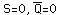

The time sequence at right shows the conditions under which the set and reset inputs cause a state change, and when they don't.
The concept of a "latch" circuit is important to creating memory devices. The function of such a circuit is to "latch" the value created by the input signal to the device and hold that value until some other signal changes it.
After being set to Q=1 by the low pulse at S (NAND gate function), the restored normal value S=1 is consistent witht the Q=1 state, so it is stable. Another negative pulse on S gives  which does not switch the flip-flop, so it ignores further input.